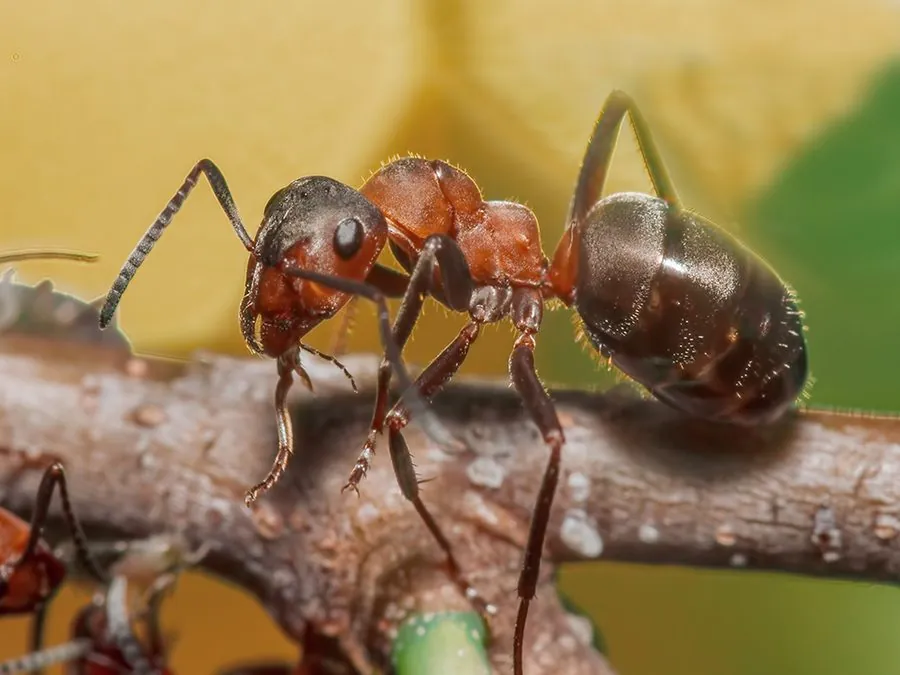

昆虫 · 动物界
红褐林蚁 Formica rufa

头胸红褐、腹部黑褐的大型林蚁，用松针和细枝堆成巨大的蚁丘，捕食森林害虫，被世界自然保护联盟列为近危物种。
- 分类
- 门节肢动物门纲昆虫纲目膜翅目科蚁科属林蚁属
- 栖息环境
- 针叶林与混交林的林缘、林窗和向阳空地，蚁丘高出地面
- 地理分布
- 欧洲和亚洲北部针叶林与混交林，中国见于东北和西北林区
- 保护级别
- 被世界自然保护联盟列为近危，部分国家立法保护
物种志
红褐林蚁的工蚁体长约四至六毫米，头部与胸部红褐色，腹部黑褐色，体表有细毛，上颚发达，腹柄只有一节，这是林蚁属的典型特征。蚁后体型更大，胸部高隆，颜色偏深。群体的蚁丘由松针、细枝、落叶和泥土堆成，高出地面数十厘米，内部有复杂的通道和育幼室，靠有机物发酵维持温度。
它分布于欧洲和亚洲北部的针叶林与混交林，在中国见于东北和西北的林区，栖息在松林、云杉林和林缘，蚁丘多建在向阳的空地或林窗。它是捕食性蚂蚁，猎食毛虫、甲虫和其他昆虫，一只蚁丘的群体一年能消耗大量森林害虫，被视为森林的卫士；它也取食蚜虫分泌的蜜露。群体可存活数十年，夏季婚飞。由于森林采伐和栖息地破碎化，它在多地数量下降，被世界自然保护联盟列为近危，部分国家立法保护。
形态与习性
- 工蚁体长约四至六毫米，头胸红褐、腹部黑褐
- 蚁丘松针细枝堆成，高出地面数十厘米
- 食性捕食毛虫、甲虫，也取食蚜虫蜜露
- 生态作用大量消耗森林害虫，被视为森林卫士
- 群体寿命蚁丘可存续数十年
- 保护世界自然保护联盟近危，部分国家立法保护
趣味知识
- 一座蚁丘能住几十万只蚂蚁，靠松针发酵维持温度。
- 它们一年吃掉的毛虫数量惊人，是森林里天然的天敌库。
- 蚁丘被挖走或林地砍伐后，这片林子恢复蚁群要很多年。